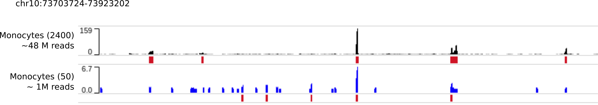

Training an AtacWorks model¶
Introduction¶
In this tutorial we train an AtacWorks model to denoise the signal track and call peaks from aggregate single-cell ATAC-seq data derived from a small number of cells. We use the dsc-ATAC-seq dataset presented in reference (1) (Section “AtacWorks enhances ATAC-seq results from small numbers of single cells”, also Supplementary Table 8). This dataset consists of single-cell ATAC-seq data from several types of human blood cells.
Note that all the AtacWorks models described in reference (1) are available to download. To learn how to download and use an existing model, refer to the documentation.
We selected 2400 Monocytes from this dataset - this is our ‘clean’, high-coverage dataset. We then randomly sampled 50 of these 2400 Monocytes. Here’s what the ATAC-seq signal from 50 cells and 2400 cells looks like, for a region on chromosome 10:

Compared to the ‘clean’ signal from 2400 cells, the aggregated ATAC-Seq signal track from these 50 cells is noisy. Because of noise in the signal, peak calls calculated by MACS2 on this data are also inaccurate.
We train an AtacWorks model to learn a mapping from the 50-cell ATAC-seq signals to the 2400-cell ATAC-seq signal and peak calls. In other words, given a noisy ATAC-seq signal from 50 cells, this model learns what the signal would look like - and where the peaks would be called - if we had sequenced 2400 cells.
Input files¶
To train an AtacWorks model, you need a pair of ATAC-Seq datasets from the same cell type, where one dataset has lower coverage or lower quality than the other. You can also use multiple such pairs of datasets. For each such pair of datasets, AtacWorks requires three input files:
A coverage track representing the number of sequencing reads mapped to each position on the genome in the low-coverage or low-quality dataset. This may be smoothed or processed. Format: bigWig
A coverage track representing the number of sequencing reads mapped to each position on the genome in the high-coverage or high-quality dataset. This may be smoothed or processed in the same way as the previous track. Format: bigWig
The genomic positions of peaks called on the high-coverage or high-quality dataset. These can be obtained by using MACS2 or any other peak caller. Format: either BED or the narrowPeak format produced by MACS2.
The model learns a mapping from (1) to both (2) and (3); in other words, from the noisy coverage track, it learns to predict both the clean coverage track, and the positions of peaks in the clean dataset.
Tutorial Notebook¶
For easy demonstration of training workflow, we’ve setup a notebook. Follow the documentation for step-by-step guide.